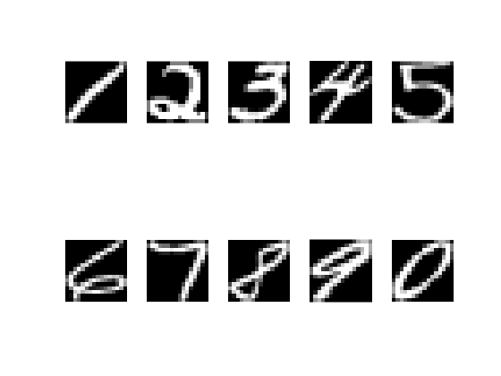
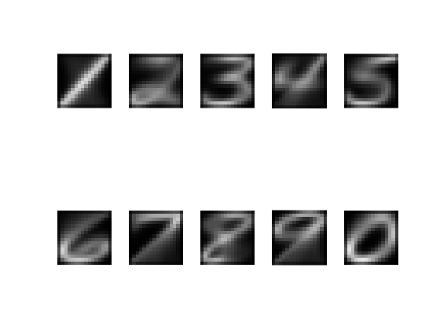
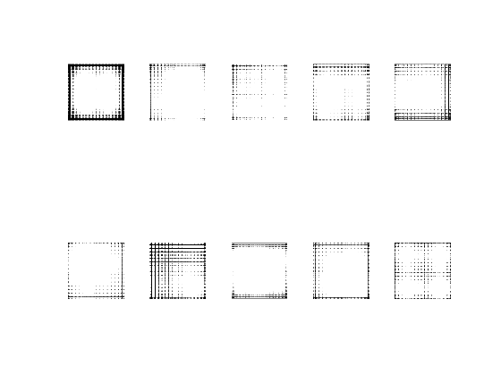
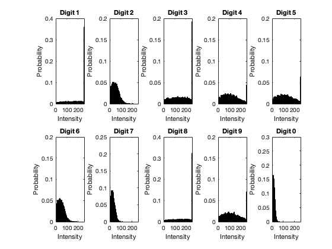

Contents
- QUESTION 1: PLOT 2 X 5 IMAGE GRID OF IMAGES
- QUESTION 2: PLOT THE SAMPLE MEAN FOR ALL DIGITS IN THE 2X5 GRID
- QUESTION 3: PLOT THE SAMPLE MEAN FOR ALL 10 FULL(1100 SAMPLES) SETS
- QUESTION 4: SAMPLE COVARIENCE MATRICES FOR EACH OF THE 10 SETS OF 1100 DIGIT EXAMPLES
- QUESTION 5: PLOT OF THE 120TH CENTRAL PIXEL's MARGINAL DISTRIBUTION FOR EACH 10 DIT CLASSES USING 2X5 IMAGE GRID
% To load USPS Handwritten Digits dataset load("USPS_all.mat");
QUESTION 1: PLOT 2 X 5 IMAGE GRID OF IMAGES
% Inorder to view the data,first open a figure figure; % For loop to iterate over all the digits to plot in 2x5 grid for i = 1:10 subplot(2,5,i); x = data(:,i,i); imshow(reshape(x,[16 16])); end
QUESTION 2: PLOT THE SAMPLE MEAN FOR ALL DIGITS IN THE 2X5 GRID
open figure to view data
figure; % Array to store the samples means for digits from 1 to 9 and 0 sample_means = zeros(256, 10); % for i = 1:10 subplot(2,5,i); data_digit = data(:,:,i); xsize = size(data_digit); data_mean = sum(data_digit,2)/xsize(2); data_mean = uint8(data_mean); sample_means(:, i) = data_mean; imshow(reshape(data_mean,[16 16])); end
QUESTION 3: PLOT THE SAMPLE MEAN FOR ALL 10 FULL(1100 SAMPLES) SETS
--> AVERAGE OF THE HANDWRITTEN DIGITS --> RESHAPE AS 16X16 & INCLUDE THIS OVERALL AVG MEAN Initialize figure
figure;
sample_means_size = size(sample_means);
% -> Compute the sample mean for the current digit
total_sample_mean = sum(sample_means,2)/sample_means_size(2);
total_sample_mean = uint8(total_sample_mean);
imshow(reshape(total_sample_mean,[16 16]));
QUESTION 4: SAMPLE COVARIENCE MATRICES FOR EACH OF THE 10 SETS OF 1100 DIGIT EXAMPLES
figure; % Here we define a 3D sample covarience matrix d_array = zeros([256 256 10]); % For each digit we calculate the sample covariance for i=1:sample_means_size(2) for j=1:xsize(2) data_digit = data(:,:,i); vector_difference = im2double(data_digit(:,j)) - sample_means(:, i); outer_product = vector_difference*vector_difference.'; d_array(:,:,i) = d_array(:,:,i) + outer_product; end d_array(:, :, i) = d_array(:, :, i)/(xsize(2) - 1); end % Plot each digit sample covarience in 2x5 grid for i=1:sample_means_size(2) subplot(2,5,i); imshow(reshape(uint8(d_array(:,:,i)),[256 256])); end
QUESTION 5: PLOT OF THE 120TH CENTRAL PIXEL's MARGINAL DISTRIBUTION FOR EACH 10 DIT CLASSES USING 2X5 IMAGE GRID
HERE WE GENERATE A MULTIVARIATE NORMAL DISTRIBUTION
% Initialize a new figure % Define the number of samples figure; no_samples = 10000; % Initialize a 3D array to store the samples for each digit class % Initialize an array to store the samples of the 120th central pixel for each class arr_samples = zeros([no_samples, 256, sample_means_size(2)]); distribution = zeros([no_samples, sample_means_size(2)]); % Generate samples for each digit class for i = 1:sample_means_size(2) % Generate samples from a multivariate normal distribution using mvnrnd arr_samples(:, :, i) = mvnrnd(sample_means(:, i), d_array(:, :, i), no_samples); % Extract the values of the 120th central pixel from each sample distribution(:, i) = arr_samples(:, 120, i); end % Convert arrays to uint8 for histogram plotting % Define histogram edges arr_samples = uint8(arr_samples); distribution = uint8(distribution); hist_edges = 0:5:255; % Plot histograms for each digit class for i = 1:10 % Create subplot for each digit class % Plot histogram of marginal distribution of the 120th central pixel % Set title, axis labels, and limits subplot(2, 5, i); histogram(distribution(:, i), hist_edges, 'Normalization', 'probability'); title(['Digit ', num2str(mod(i, 10))]); xlabel('Intensity'); ylabel('Probability'); xlim([0 255]); end